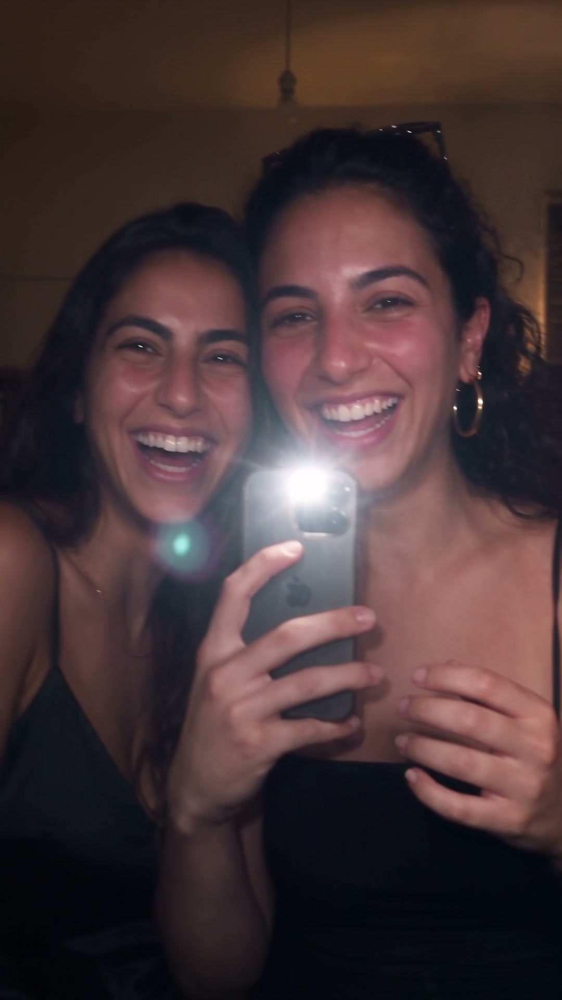
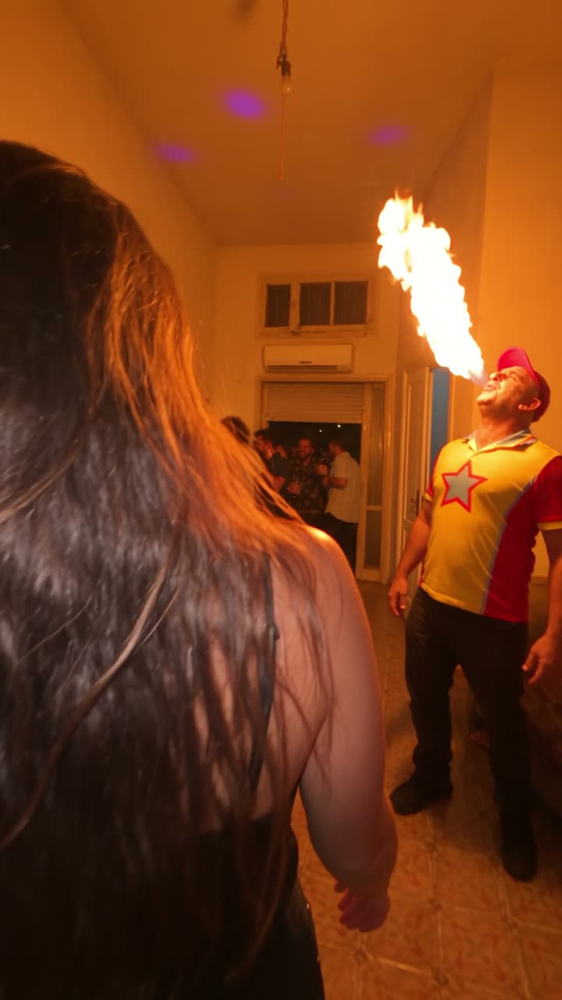
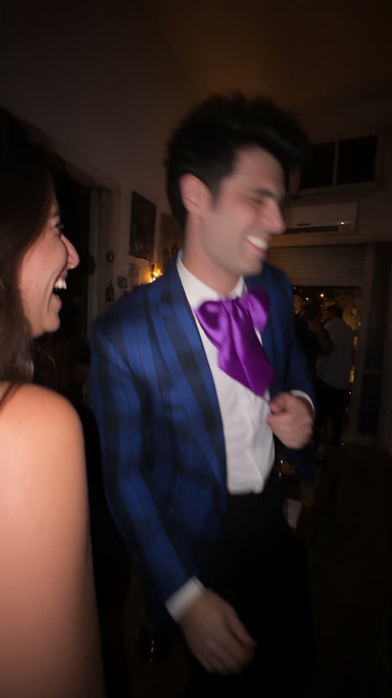
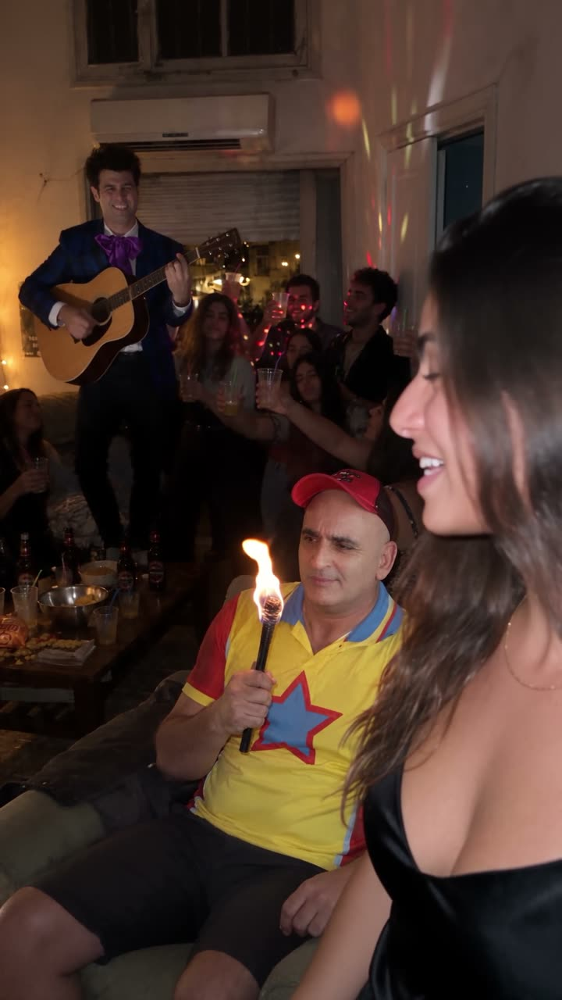
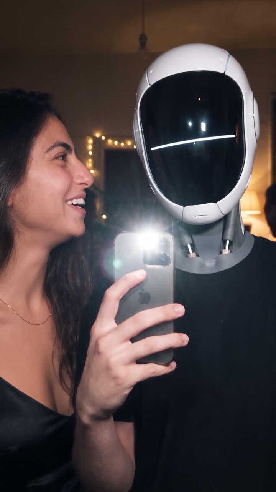
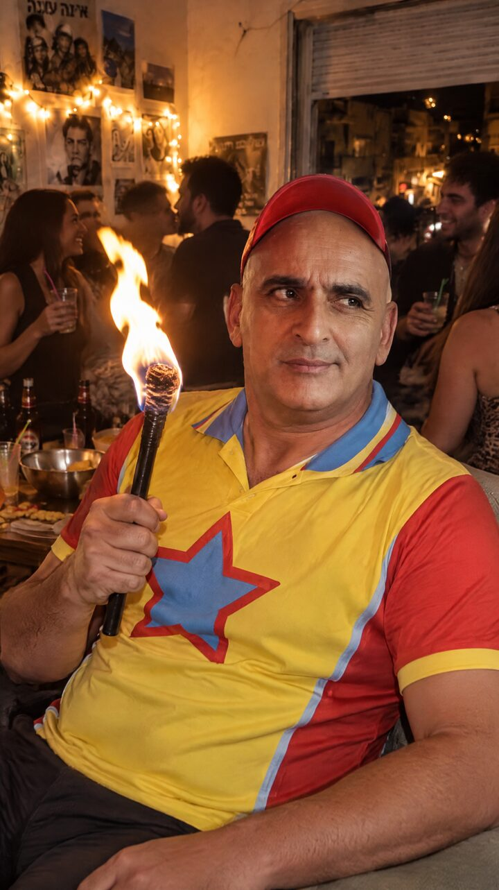
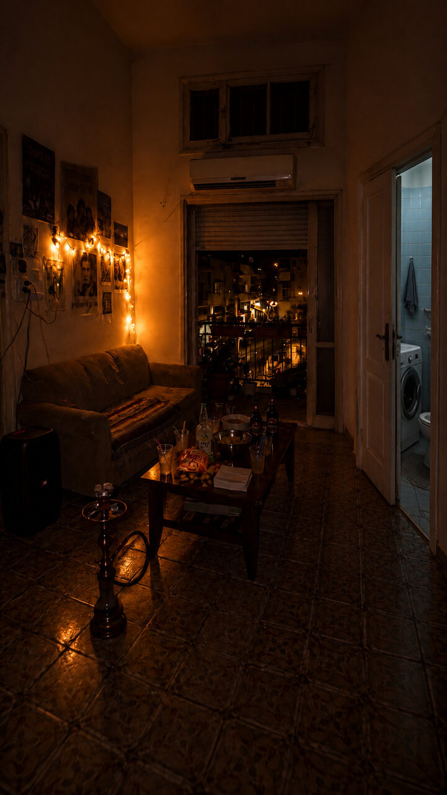
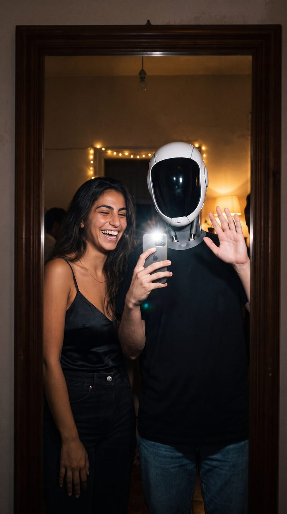

מסיבה שלמה ב-AI, שנראית כאילו חברה צילמה אותה בטלפון
טייק רציף אחד, אנשים מוכרים, אש ופלאש של אייפון. בלי שהמודל ימציא דלתות ובלי שהפנים ייצאו של מישהו אחר.
היום כבר לא צריך לשכור דירה ולהזמין ארבעים איש כדי לצלם מסיבה.צריך טייק אחד שבנוי נכון.

REC
כל התמונות בעמוד הן פריימים מהסרט עצמו
0:01הדלת נפתחת

0:05כדור אש בסלון

0:07האורח עם הפפיון0:15באמבטיה

0:23חזרה לסלון0:29פנים לעדשה

0:38מי צילמה
1רפרנסיםפנים, בגדים ומקום. כל אחד בתמונה נפרדת.
2מפה של הדירהתמונה אחת שמראה איפה כל דלת.
3טייק אחדטלפון, פנס, ובלי מילים של קולנוע.
מה צריך לפני שמתחילים
מודל וידאוSeedance 2.5. אני מריץ אותו דרך קולבו: קודם טיוטה של 480, ורק מה שעובר עולה ל-Full Quality.
מודל תמונותGPT Image 2.5 לכל דבר שיש בו עברית כתובה, ו-Nano Banana Pro לעריכות של אנשים.
צילומים אמיתייםאם יש בסרטון אדם מוכר, צריך שלוש תמונות פנים אמיתיות שלו מזוויות שונות.
שני טייקיםכל הרצה יוצאת קצת אחרת. מריצים שניים ובוחרים.
1
שלושה חוקים שהכי שינו את התוצאה
הטלפון הוא המצלמההפנס של הטלפון הוא מקור האור הראשי, החדר כהה, והפנים הקרובות הן הדבר הכי מואר בפריים. ברגע שכתבתי "סינמטי" או "עדשת 85", העור נהיה פלסטיק.
המודל לא לוקח יוזמהכל מה שלא כתוב, הוא ממציא מחדש: איפה כל דלת, כמה אנשים בחדר, איזו יד מחזיקה את הטלפון. אז כותבים הכול.
פנים מצילום אמיתילאדם מוכר נותנים רפרנס פנים נפרד, רפרנס בגדים נפרד ורפרנס מקום נפרד. כשהכול בתמונה אחת, הפנים יוצאות של מישהו אחר.

בגדיםצילום אמיתי שרק הבגדים בו שונו

מקוםהסלון ריק, בלי אנשיםבסרטיחד עם דף של שלוש תמונות פנים
2
המפה של הדירה
הבעיה הכי גדולה שלי הייתה מעברים בין חדרים.
סידנס המציא מסדרונות עם נורות לד, דלתות שלא קיימות, ומקרר שמחליף מגנטים באמצע השוט. מה שפתר את זה: תמונה אחת של הסלון כפי שרואים אותו מהכניסה, שבה רואים בדיוק איפה דלת האמבטיה ואיפה המרפסת.
בפרומפט כתוב: הדלת נפתחת ישר לסלון, הספה על הקיר השמאלי, דלת האמבטיה על הקיר הימני. אין מסדרון.
ואת המעבר לחדר אחר לא מבקשים מהמודל. השוט נגמר כשהיא תופסת את הידית, המצלמה זזה מהר לדלת, והשוט הבא מתחיל כבר בפנים.
המפה: ספה משמאל, מרפסת מול, אמבטיה מימין.
3
הפרומפט של הטייק
זה המבנה שעבד אצלי. מחליפים את הדמויות ומשאירים את החוקים.
שימו לב לשורה האחרונה: הפוקוס של הטלפון "נושם" פעם אחת כשהפנים מתקרבות. זה הפרט הקטן שהכי מוכר את זה כצילום אמיתי.
תשע השניות הראשונות של הסרט, מהפרומפט הזה.
SEEDANCE 2.5 PROMPTONE CONTINUOUS TAKE, NO CUTS, 12 seconds, vertical 9:16. A real phone video of a house party: her best friend films on her iPhone, walking right behind her from the front door through the packed dark living room.
REFERENCES: @Image1 = THE GIRL: strictly this face, hair and outfit. @Image2 = the famous guest's real face from three photos (THE identity). @Image3 = his outfit only. @Image4 = THE MAP: the living room seen from the front door. References give appearance only.
THE APARTMENT (fixed): the front door opens DIRECTLY into the living room of @Image4. Sofa on the LEFT wall, coffee table in the middle, the closed bathroom door on the RIGHT wall. No hallway, no corridor, no other room.
CAMERA DISTANCE AND LIGHT: she is always within one metre of the lens; whenever she talks she turns and her face fills the upper half of the frame, lit hard by the phone torch like an iPhone flash at a night party. No hand of the filming friend and no phone ever enters the frame.
[0:00-0:02.5] The front door swings open from inside. She stands in the doorway close to the lens, relaxed smile: "Finally! Everyone's here." She turns and walks in.
[0:02.5-0:10] The PACKED, DARK living room, about forty guests dancing, mostly silhouettes against warm string lights. As they pass, the famous guest blows one big ball of fire toward the ceiling; the orange light washes over her laughing face. She turns to the lens: "Yes, that's them. No, you're not hallucinating."
[0:10-0:12] She grabs the bathroom door handle and glances back with a conspiratorial look; the phone whips toward the door into motion blur.
ACTING: small and real, natural half-smiles, no exaggerated faces, no rushing.
LOOK: vertical 9:16 handheld iPhone 16 Pro video, rear camera, 1x main lens, filmed by her best friend who holds the phone at chest height and walks right behind her; standard phone auto-exposure and auto-focus, deep focus, the phone's torch is ON as one small hard light from the lens position, so the nearest face is lit hard and bright and the light falls off fast into a dim warm room. The rooms are lit only by practical lights: warm string lights, a tungsten floor lamp, one bare ceiling bulb. Real colours straight out of the phone: no cinematic grade, no film grain, no shallow depth of field, no bokeh, no lens flares, no HDR, no slow motion. Natural handheld sway and walking bounce, slight motion blur on quick turns, the auto-focus breathes once when a face comes very close.
4
החשיפה בסוף
החשיפה הכי טובה יצאה כשהשוט לא התחיל מתמונה.
כל פעם שנתתי לו תמונת פתיחה מוכנה, הבנות עמדו קפואות. מה שעבד: להמשיך מהפריים האחרון של הטייק הקודם, ולכתוב תנועה רציפה עד רגע החשיפה.
את הרובוט מכינים קודם כתמונה ומאשרים אותה. אחר כך היא נכנסת לשוט כרפרנס.

הרפרנס שאושרבסרט
טעויות ששילמנו עליהן
עברית כתובה יוצאת שבורהפוסטר, פתק או שקית במבה: מכינים קודם תמונה נקייה של הכתב ב-GPT Image, ורק אז שותלים אותה בסצנה.
כוסות אדומות של מסיבה אמריקאיתאם לא כותבים "כוסות פלסטיק שקופות עם קשיות", מקבלים אמריקה.
הפנים הופכות למסכה לפני הזמןכותבים במפורש שהפנים נשארות חיות עד הרגע שמושכים אותן.
שני אנשים באותה תלבושתכותבים "בדיוק אחד מכל אחד, בלי כפילים".
רוצים סרטון כזה לעסק שלכם?
אני בונה סרטוני AI שנראים אמיתיים, מהרעיון ועד העריכה.
בעלי עסקים או ארגונים שרוצים ללמוד ליצור תוכן באופן מקצועי? שאלו על תוכניות ליווי אחד על אחד או על קורסים לצוותים.